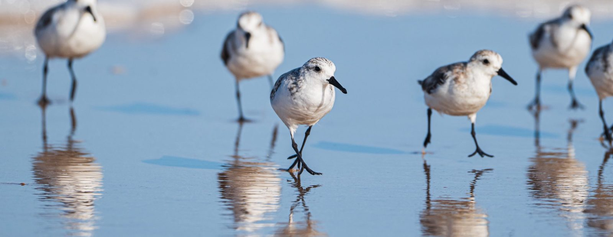

Ten hlas, co říká, že na to nemáš, se dneska plete.

Než jsem poprvé letěla sama, měla jsem v prohlížeči otevřených přes 30 záložek. Fóra, blogy, tabulky. Čím víc jsem četla, tím míň jsem věděla, co dělat první. Přesně tenhle zmatek jsem chtěla tomuhle průvodci vzít. Žádných 30 záložek. Jeden hlas, co řekne: tohle teď, tohle potom. Na tobě je jediné: jít pomalu a nevzdat to. To ostatní zvládneme spolu. Věřím ti.
pojď, ukážu ti to ↓
Sledovat na YouTube Video se právě chystá i přímo do appky, tohle mezitím funguje, když máš signál. ↗Zabere to 15 minut. Zbylých 6 modulů počká, až budeš mít chvíli příště.
Název modulu
Tady budou kroky, vysvětlení a pasti, na které si dát pozor.
Klikni, až si tím projdeš. Letadélko nahoře popojede.

Všech 7 modulů máš za sebou. JSI READY.
Za sebou máš doklady, letenky, ubytování, peníze, balení i to, co dělat, kdyby se něco pokazilo. Teď víš věci, které jsem se sama učila roky, a to za jedno odpoledne.
Paní Cokdyž dnes v noci nemá o čem přemýšlet. (Poprvé za dlouho.)
Zbývá jediné: sbalit kufr a jet. Uvidíme se v Americe.
Máš za sebou celou přípravu. Jedna věc ale rozhoduje o tom, jak to celé začne. Imigrační kontrola.
Pokud chceš vědět přesně, co úředník řekne, co odpovědět a co nikdy neříkat, mám pro tebe ještě jeden krok.
Přes imigrační v klidu: video průvodce, tahák na 16 stranách a seznam frází s fonetickým přepisem. 11 minut a víš všechno.
Chci to vědět předem ↗Trezor
Ulož si sem ESTA, letenky a rezervace. Zůstane to jen v tomhle zařízení, takže to najdeš i v letadle nebo bez signálu na letišti.
Itinerář
Naplánuj cestu den po dni. Ke každé zastávce appka rovnou nabídne odkaz do Google Map, otevře se, jakmile budeš mít signál.
Appka nemá server, takže sdílení pošle jen tenhle jeden snímek cesty tak, jak vypadá teď. Až v ní příště něco změníš, pošli ho znovu.
Můj rozpočet
Zadej svoje čísla, appka je sečte. Ubytování i vstupy jdou rozepsat po položkách, ať máš přehled, ne jen jedno velké číslo.
Převodník
Měna, jednotky a spropitné, spočítané rovnou v appce, i bez signálu a bez dat.
Až přistaneš
Než odletíš tě dovede až k letadlu. Až přistaneš pokračuje tam, kde tahle appka končí: doprava, nakupování, stravování a další.
Sedm modulů, stejně podrobných jako tenhle průvodce. Nic z nich teď nejde koupit ani odemknout, appka jen ukazuje, co je na cestě.